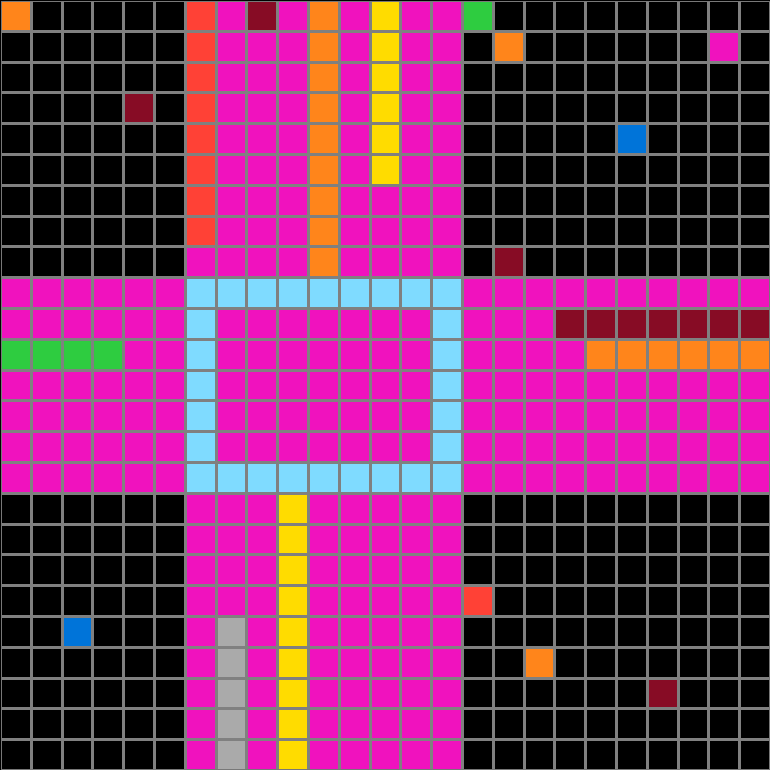
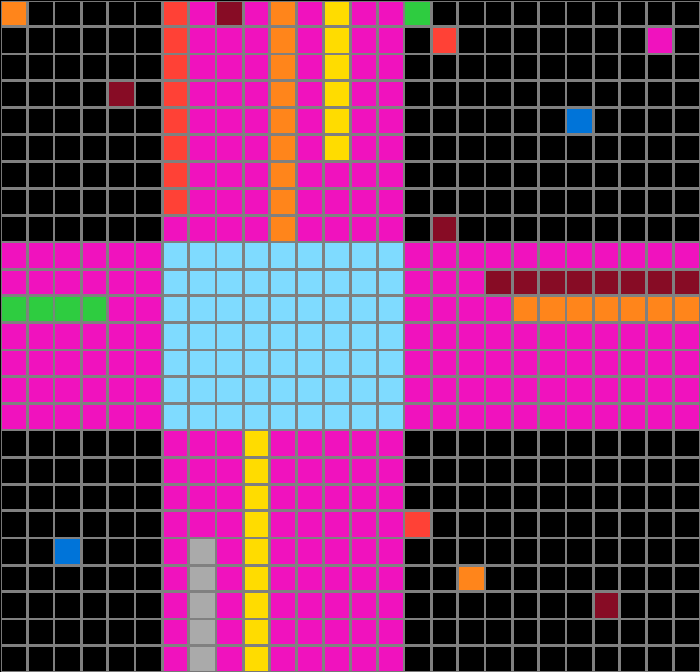
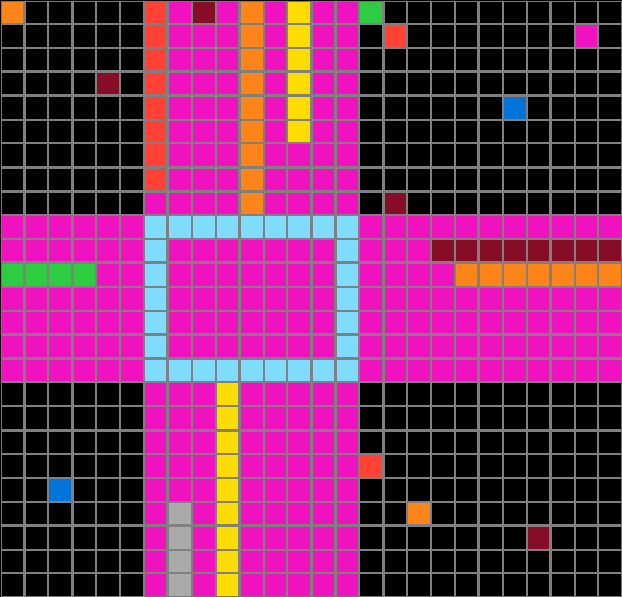
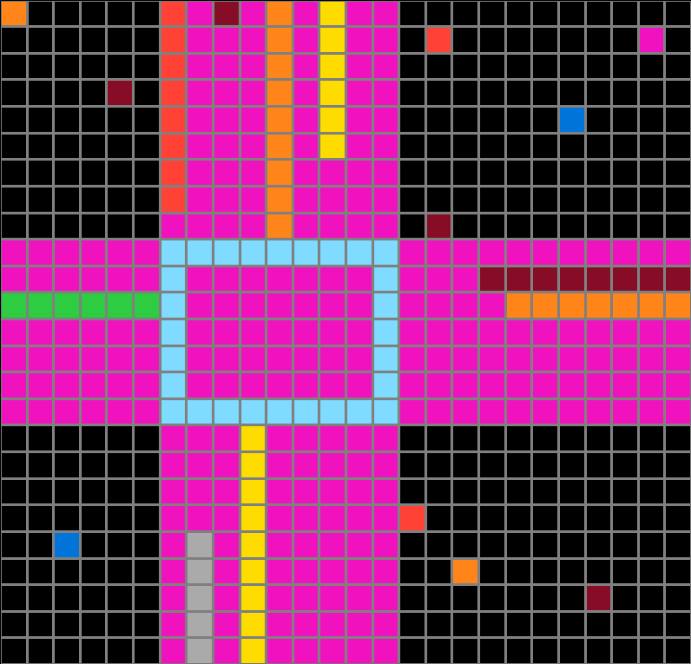
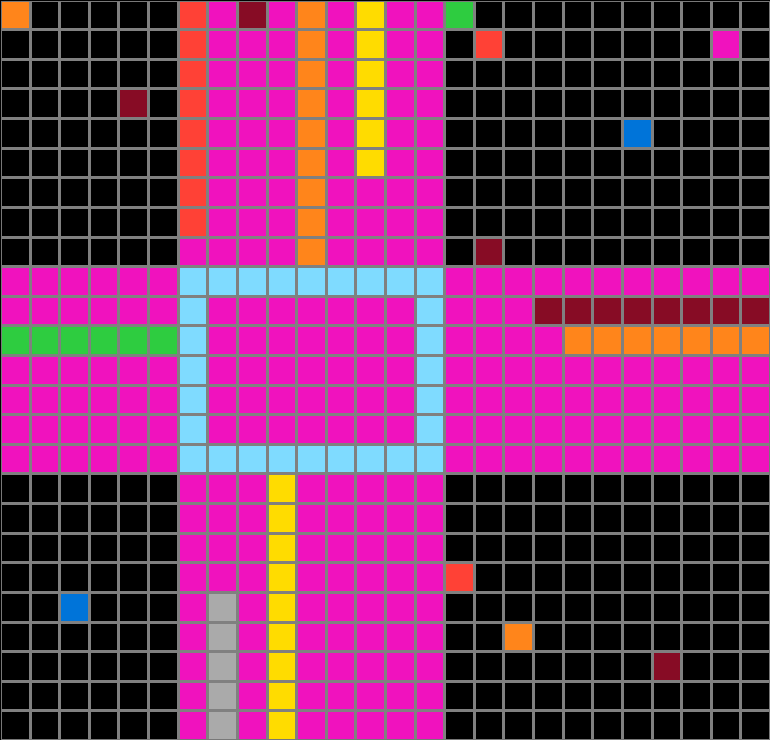
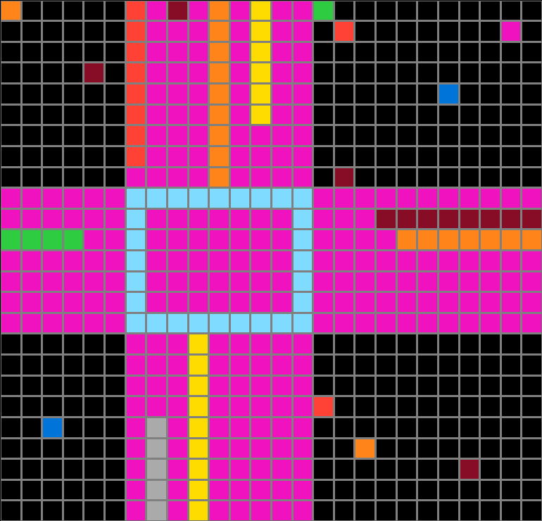
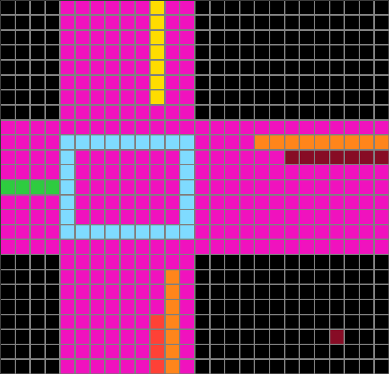
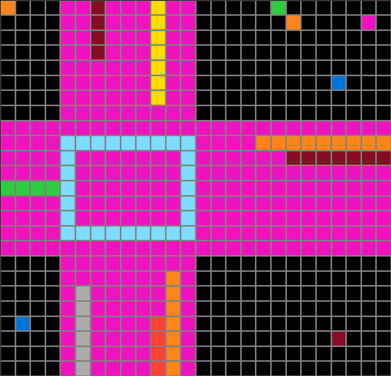
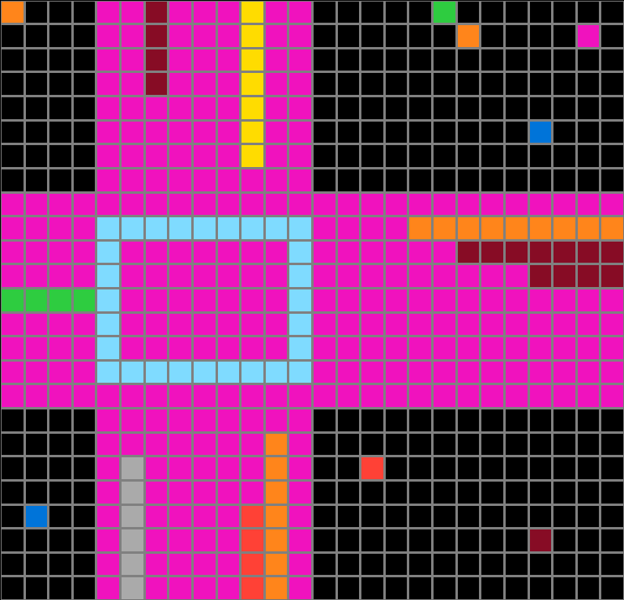

256b0a75.json
Navigation
Train Examples


Test Example


Participant 1
Initial description: Complete an outline of the box from with the color that creates the three corners of the box. Use the color from the fourth corner to fill in the center of the box and most of the area to the edges following the lines of the box. If a box is colored in that area, then use that color to fill in out to the edge of the area.
Final description: I thought that this rule was to complete an outline of using the same colors indicated by the four corners, then fill in the rest of the pattern using the color from the last corner and taking any colors that were in the surface area of the fill out to the edge of the area.

Participant 2
Initial description: Fill in the center square using the matching corner colors. Create a frame using the different corner color. every color withing the frame gets extended out to the edge of the grid.
Final description: connect the four corners of the square with the repeating color corners. fill the square and frame the square with the off colored corner color. colored dots appearing within the frame extend to the edge of the grid.


Participant 3
Initial description: Take the edges of the square and expand and invert the colors.
Final description: Take the edges of the square and expand and invert the colors.

Participant 4
Initial description: Light blue box is based off of the four three dot corner and its the color based off three of the side being that shade. The hot pink is the sides and inside based off it being the four corner of the box colore. Anything outside the pink is the same as the test input. Anything inside is the color starting at the edge going straight to the dot.
Final description: Light blue box is based off of the four three dot corner and its the color based off three of the side being that shade. The hot pink is the sides and inside based off it being the four corner of the box colore. Anything outside the pink is the same as the test input. Anything inside is the color starting at the edge going straight to the dot.


Participant 5
Initial description: Create a flow pattern by alternating between the colors in each row that overlapped.
Final description: outline square with the 3 L shaped color, flow out with the single L ship color, drag color of squares in the pink to outside of box and all other squares copy as in test input


Participant 6
Initial description: First, I used the majority color (light blue) of the four corners in the center of the input to create the square in the center. Then I used the minority color (pink) to create squares from the edge of the shape to the edge of the output box. I also filled in the center of the square with the pink color. Then, any colored squares that were within the pink zone were filled in from the space where the square was to the edge of the output zone using the same color as the square.
Final description: First, I used the majority color (light blue) of the four corners in the center of the input to create the square in the center. Then I used the minority color (pink) to create squares from the edge of the shape to the edge of the output box. I also filled in the center of the square with the pink color. Then, any colored squares that were within the pink zone were filled in from the space where the square was to the edge of the output zone using the same color as the square.

Participant 7
Initial description: The majority color that form the corners of the frame are used for the frame color. The other color corner of the frame fills the the board inside the frame with that color and radiates in 4 directions within the length and height of that frame to fill out the colors outward. Any colors caught within that shaded area are then filled only outward from that position.
Final description: The majority color that form the corners of the frame are used for the frame color. The other color corner of the frame fills the the board inside the frame with that color and radiates in 4 directions within the length and height of that frame to fill out the colors outward. Any colors caught within that shaded area are then filled only outward from that position.

Participant 8
Initial description: The ring is made of the light blue color. The corner color is used as an extension from the center outwards from the edges of the rectangle. Every color in the new color that has been extended is also extended straight outwards.
Final description: The ring is made of the light blue color. The corner color is used as an extension from the center outwards from the edges of the rectangle. Every color in the new color that has been extended is also extended straight outwards.

Participant 9
Initial description: Using the box crosshairs, creating elongated plus sign pattern. Add accents that reflect the colors on the outside of these boxed crosshairs.
Final description: Using the box crosshairs to create an elongated plus sign pattern. Then dd accents that reflect the colors on the outside of these boxed crosshairs within the plus sign pattern and any colors not within proximity should be replicated.


